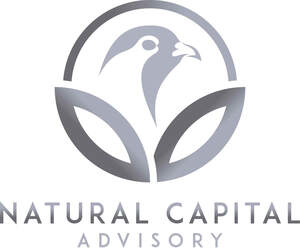

Trade Mark Journal No.2025/027 4 July 2025
UK00004220633 18 June 2025 (35,36,42,44,45)
Mark 1
Mark 2

- Class 35
- Financial auditing; Consultancy relating to auditing; Assessment analysis relating to business management; Computerised tax assessments (preparation of -) [accounting]; Business auditing; Management accounting; Computerised auditing; Auditing of financial statements; Auditing of accounts; Account auditing; Consultancy relating to tax accounting; Cost management accounting; Benchmarking (evaluation of business organisation practices); Accounting consultancy relating to taxation; Data management; Consultancy relating to business document management; Tax assessment [accounts] preparation; Business risk assessment services; Industrial management consultation including cost/yield analyses; Accounting services relating to tax planning; Forensic accounting services; Data management services; Computerised data management; Tracking and monitoring energy consumption for others for account auditing purposes; Analysis of business management systems; Evaluations relating to business management in industrial enterprises; Advisory services relating to business risk management ; Conducting online business management research surveys ; Advisory services relating to business organisation and management; Business management analysis; Accounting services relating to costs for farming enterprises; Financial records management; Inventory management services ; Business consultancy services relating to the supply of quality management systems; Arranging of trading transactions and commercial contracts; Negotiating and concluding commercial transactions for others; Negotiation of advertising contracts; Arranging and conducting trade shows relating to publishing; Negotiation of contracts relating to the purchase and sale of goods; Arranging of contracts for others for the buying and selling of goods; Arranging and conducting commercial trade shows; Intermediary services relating to advertising; Negotiation of business contracts for others; Mediation of agreements regarding the sale and purchase of goods; Conducting, arranging and organizing trade shows and trade fairs for commercial and advertising purposes; Arranging of buying and selling contracts for third parties; Negotiation of commercial transactions for performing artists; Business intermediary services; Advisory services for preparing and carrying out commercial transactions; Literary agency services consisting of the negotiation of contracts; Negotiation and settlement of commercial transactions for third parties; Business intermediary and advisory services in the field of selling products and rendering services; Arranging and concluding commercial transactions for others; Arranging of contracts, for others, for the providing of services; Arranging of contracts for the purchase and sale of goods and services, for others; Arranging business introductions relating to the buying and selling of products; Arranging and conducting trade fairs; Advisory services relating to commercial transactions; Trade marketing [other than selling]; Arranging and conducting of real estate auctions; Arranging advertising contracts for others; Promoting the goods and services of others through the administration of sales and promotional incentive schemes involving trading stamps; Arranging and conducting trade shows; Arranging of auction sales; Auction sales (Arranging of -); Negotiation of commercial transactions for third parties; Advisory and consultancy services relating to import-export agencies; Arranging of contractual [trade]services with third parties; Negotiation and conclusion of commercial transactions for third parties via telecommunication systems; Procurement of contracts for others relating to the sale of goods; Arranging commercial transactions, for others, via online shops; Arranging of collective buying; Mediation of contracts for purchase and sale of products; Consultancy regarding the organization or managing of a trade company; Advertising services for promoting the brokerage of stocks and other securities; Business management of insurance agencies and brokers on an outsourcing basis; Business services relating to the arrangement of joint ventures; Intermediary services relating to the rental of advertising time and space; Foreign trade consultancy services; Arranging of trade fairs; Advisory and consultancy services relating to the procurement of goods for others; Agency services for arranging business introductions; Mediation and conclusion of commercial transactions for others; Procuring of contracts for the purchase and sale of goods; Advice relating to barter trade; Consultancy relating to business acquisition; Management assistance for promoting business; Arranging and conducting auctions; Arranging of trade shows ; Shows (Arranging trade -); Trade shows (Arranging of -); Outsourcing services in the nature of arranging service contracts for others; Negotiation and conclusion of commercial transactions for third parties; Procurement of contracts for the purchase and sale of goods and services for others; Business intermediary services relating to the matching of various professionals with clients; Arranging of commercial and business contacts; Commercial lobbying services; Outsourcing services in the nature of arranging procurement of goods for others; Promoting and conducting trade shows; .
- Class 36
- Investment risk assessment services; Financial risk assessment services; Financial assessments; Financial research in the field of risk management; Fiscal assessment and evaluation; Financial consultancy in the field of risk management; Advisory services relating to [financial] risk management; Fiscal assessment; Risk management consultancy [financial]; Advisory services relating to financial asset management; Accounting consultation; Financial services in the nature of an investment security; Fiscal assessments; Taxation consultancy services [not accounting]; Financial advisory services relating to assets management; Financial information management and analysis services; Fiscal assessments and valuations; Fiscal valuations and assessments; Provision of financial information for professionals in the field of portfolio management, for portfolio management; Estate management services relating to agriculture; Assessment and management of real estate; Financial management relating to investment; Financial advisory and management services; Financial management advisory services; Financial evaluation of development costs relating to the oil, gas and mining industries; Tax consultancy [not accounting]; Financial investment management services; Management of investments; Financial management services relating to local authorities; Investment management; Brokering services; Mortgage brokering; Insurance brokering; Brokering of financial services; Facilitating and arranging financing; Arranging of loan agreements; Arranging of lease agreements; Arranging of loan agreements in relation to securities; Financing services relating to trade; Exchange brokerage services; Arranging of loan agreements secured on real estate; Arranging the provision of trade credit; Brokerage services for arranging financing by other financial institutions; Exchange brokerage; Car broker services; Arranging of leases and rental agreements for real estate; Arranging the provision of finance; Arranging the provision of finance for real estate purchase; Brokerage services relating to securities offering; Services of a stock broker; Brokerage of credit agreements; Futures brokerage services relating to freight; Debt settlement negotiation services; Financial consultancy in relation to the buying and selling of businesses; Financing in relation to the buying and selling of businesses; Exchange services relating to the trading of commodities; Arranging of loan agreements in relation to mortgage bonds; Exchange services relating to the trading of futures; Arranging financial transactions; Brokerage of building society savings agreements; Provision of trade finance; Financing services for the securing of funds for business; Brokerage services relating to mutual funds; Providing information relating to foreign exchange transactions; Financial services relating to buying and trading of commodities; Agencies or brokerage for leasing or renting of land; Arranging the sale of loans; Exchange market services relating to commodity futures contracts; Arranging of finance; Clearing services for payment transactions; Provision of finance for leasing; Conducting foreign exchange transactions for others; Exchange services relating to the trading of options; Financing services for the securing of funds in respect of ventures; Trade finance services; Automated securities trade execution services; Advisory services relating to financing; Financial intermediary services; Consultancy and brokerage services relating to vehicle insurance; Money exchange agency services; Brokerage advisory services relating to insurance; Financing services for securing funds; Securities brokerage and trading services; Underwriting in foreign exchange (Services for the -); Consultancy and brokerage services relating to life insurance; Mortgage broking services; Agency services for the selling on commission of real property; Assisting in the acquisition of real estate; Real-estate brokerage services; Consultancy and brokerage services relating to accident insurance.
- Class 42
- Environmental assessment services; Quality audits; Energy auditing; Research in the field of environmental conservation; Environmental surveys; Inspection of fisheries; Advisory services relating to environmental pollution; Environmental monitoring services; Environmental hazard assessment; Consultancy relating to geological surveys; Environmental testing and inspection services; Consultancy services relating to research in the field of environmental protection; Conducting sampling and analysis services to assess pollution levels; Scientific risk assessment; Inspection of agriculture; Professional consultancy relating to the conservation of energy; Research relating to environmental protection; Advisory services relating to environmental protection; Provision of scientific information, advice and consultancy in relation to carbon offsetting; Research in the area of environmental protection; Provision of surveys [scientific]; Data security consultancy; Scientific research in the field of environmental protection; Consultancy services relating to environmental planning; Environmental consultancy services; Scientific research relating to ecology; Geological surveys or research; Hydrological research; Services for assessing the efficiency of agricultural chemicals; Research of fisheries; Research in the field of environmental protection; Environmental protection (Research in the field of -); Information services relating to the safety of fertilisers used in forestry; Research in the reduction of carbon emissions; Consultancy in the field of data security; Advisory services relating to pollution control; Environmental monitoring of waste storage areas; Information services relating to the safety of manures used in forestry; Technical project studies in the field of carbon offsetting; Geological surveys; Surveys (Geological -); Environmental monitoring services; Environmental monitoring of waste treatment areas; Environmental monitoring of waste storage areas; Environmental testing; Airborne remote monitoring relating to environmental explorations; Environmental assessment services; Environmental hazard assessment; Environmental testing of noise pollution; Environmental surveys; Advisory services relating to environmental pollution; Monitoring the quality control of seismic procedures; Environmental testing of vibration; Environmental testing services to detect contaminants in water; Environmental testing and inspection services; Research relating to environmental protection; Monitoring of water quality; Research in the area of environmental protection; Services for monitoring industrial processes; Testing services for alarm and monitoring systems; Advisory services relating to environmental protection; Research in the field of environmental protection; Environmental protection (Research in the field of -); Environmental testing of exhaust emissions; Monitoring of network systems; Testing, analysis and monitoring of telecommunication signals; Design and development of software for control, regulation and monitoring of solar energy systems; Research in the field of environmental conservation; Airborne remote sensing relating to environmental explorations; Conducting sampling and analysis services to assess pollution levels; Testing, analysis and monitoring of navigation signals; Scientific research in the field of environmental protection; Airborne remote monitoring relating to scientific explorations; Environmental consultancy services; Consultancy services relating to research in the field of environmental protection; Computer security system monitoring services; Monitoring of computer systems for security purposes; Consultancy services relating to environmental planning; Process monitoring for quality assurance; Monitoring of activities which influence the environment within civil engineering structures; Monitoring of telecommunication signals; Computer system monitoring services; Monitoring of events which influence the environment within civil engineering structures; Advisory services relating to pollution control; Monitoring of contaminated land; Design of controlled environmental buildings; Condition monitoring relating to lubricants; Technical consulting in the field of pollution detection; Condition monitoring relating to fluids; Monitoring of computer systems to detect breakdowns; Engineering services in the field of environmental technology; Compilation of environmental information; Monitoring of contaminated land for gas; Advisory services relating to the safety of the environment; Technical consultancy in the field of environmental science; Condition monitoring relating to greases; Compilation of information relating to environmental conditions; Services for assessing the efficiency of industrial chemicals; Monitoring of commercial and industrial sites for detection of volatile and non-volatile organic compounds; Services for assessing the efficiency of agricultural chemicals; Quality control testing services for forestry equipment; Technical consulting in the field of environmental engineering; Condition monitoring relating to oils; Monitoring of audio warning signals.
- Class 44
- Agricultural services relating to environmental conservation; Wildlife management; Health assessment surveys; Health risk assessment surveys; Advisory and consultancy services relating to weed, pest and vermin control in agriculture, horticulture and forestry; Wildlife inventory services; Reintroduction and conservation of wildlife; Consultancy and advisory services relating to agriculture, horticulture and forestry; Advisory and consultancy services relating to the use of manure in agriculture, horticulture and forestry; Advisory and consultancy services relating to the use of fertilizers in agriculture, horticulture and forestry; Forest habitat restoration; Health assessment services; Destruction of parasites for agriculture, horticulture and forestry; Advisory and consultancy services relating to the use of non-chemical treatments for sustainable agriculture and horticulture; Pest control services for agriculture, aquaculture, horticulture and forestry; Consultancy relating to agriculture, horticulture and forestry; Pest control services for agriculture, horticulture and forestry; Health risk assessment; Advisory and consultancy services relating to the use of agricultural and horticultural fertilizers; Agriculture, horticulture and forestry services relating to the recultivation of industrial wastelands; Fumigation for pest control for agriculture, horticulture and forestry; Agriculture, aquaculture, horticulture and forestry services; Agricultural, horticulture and forestry services; Cultivation advisory services relating to agriculture.
- Class 45
- Regulatory compliance auditing; Legal compliance auditing; Consultation in relation to data protection compliance; Health and safety risk assessment services; Security assessment of risks; Legal research in the field of environmental protection; .
GWCT Natural Capital Advisory Limited
Representative: Loven Patents and Trademarks Limited